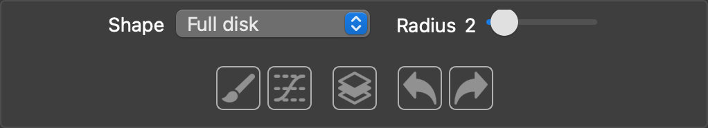
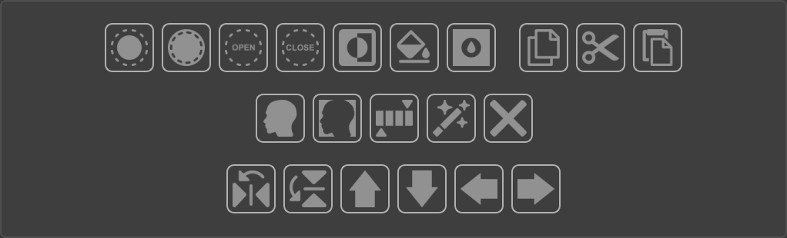
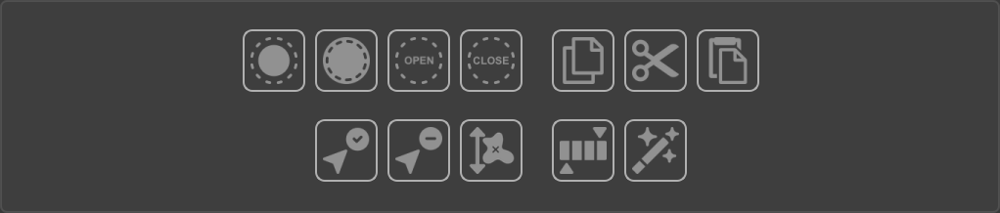
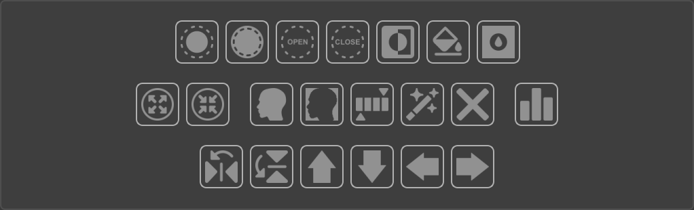
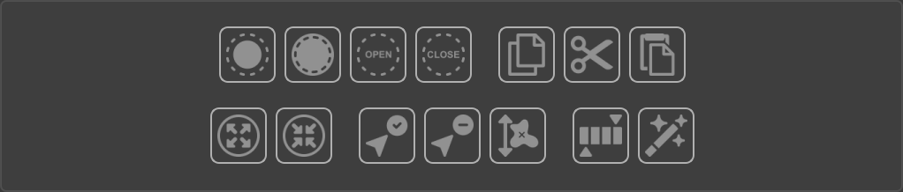
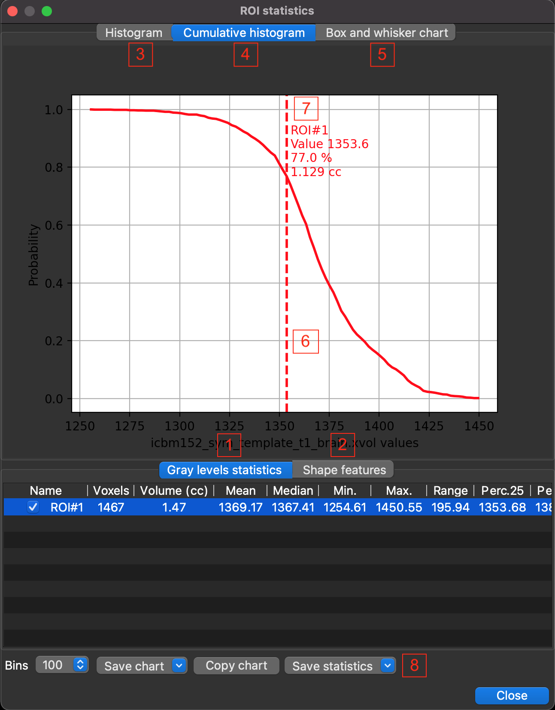

ROI Tools tab of the dock
Brush
- Shape
Select the brush shape for ROI drawing in the view widget.
“Full disc” for drawing with a 2D full disc-shaped brush.
“Thresholded disc” only pixels with a given signal range in the reference volume are drawn on the surface area of the 2D disc-shaped brush. The upper and lower thresholds are set by .
“Full ball” for drawing with a 3D full sphere-shaped brush.
“Thresholded ball” only voxels with a given signal range in the refrence volume are drawn on the volume of the 3D sphere-shaped brush. The upper and lower thresholds are set by .
- Radius
Radius in pixels/voxels of the disc/ball-shaped brush.

The drawing mode in the view widget is activated when this button is selected (blue border). In this mode, the mouse cursor in the view widget is displayed as a circle with the radius of the brush and the color of the current ROI. Left-click to draw at the current mouse position, right-click to erase.
Shows a threshold widget (see widgets) to define upper and lower thresholds used by various tools (threshold brushes, thresholding, region growing, active contour threshold variant).
Left-click to interpolate empty slices between first and last displayed slices.
Undo previous operations. The undo/redo stack is cleared when ROI is saved.
Redo previous operations. The undo/redo stack is cleared when ROI is saved.
{kind=link}
{kind=link}
{kind=link}
{kind=link}
Slice tools
All tools in this section work in 2D and are applied to the selected slice displayed in the view widget (slice view or synchronized view in the central area), other slices are not affected. Left-click in the view widget to select a slice, the selected slice will be outlined in white. If no slice is selected, these tools will have no effect.
Click for morphological dilatation (see Morphology dilatation in wikipedia) of the selected slice. Shape and size of the structuring element used by the morphology operator are defined in Brush settings.
Click for morphological erosion (see Morphology erosion in wikipedia) of the selected slice. Shape and size of the structuring element used by the morphology operator are defined in Brush settings.
Click for morphological opening (see Morphology opening in wikipedia) of the selected slice. Shape and size of the structuring element used by the morphology operator are defined in Brush settings.
Click for morphological closing (see Morphology closing in wikipedia) of the selected slice. Shape and size of the structuring element used by the morphology operator are defined in Brush settings.
Click to invert ROI pixels (binary not operator) of the selected slice.
Click to automatically fill all detected holes of the selected slice.
Click to select this button (blue border), and fill hole left-clicked in the view widget (slice view or synchronized view in the central area).
Click to copy the selected ROI slice to the clipboard.
Click to cut the selected ROI slice to the clipboard.
Click to paste the clipboard (if not empty) to the selected ROI slice.

Click for automatic object segmentation of the selected slice. The Algorithm used is defined in Brush settings.
Click for automatic background segmentation of the selected slice. The Algorithm used is defined in Brush settings.
Click for thresholding the selected ROI slice. The upper and lower thresholds are set by .
Click to display a menu with two segmentation algorithms:
Region growing, select and left-click in the view widget to calculate the region growing from the clicked seed pixel (see SimpleITK ConnectedThresholdImageFilter class). The upper and lower thresholds used by this algorithm are set by .
Confidence connected, select and left-click in the view widget to calculate the confidence connected region from the clicked seed pixel (see SimpleITK ConfidenceConnectedImageFilter class). Parameters used by this algorithm are defined in Brush settings.

Click to clear the selected ROI slice.
Click to flip the selected ROI slice along the x-axis display (x-axis world if axial or coronal slice, z-axis world if sagittal slice).
Click to flip the selected ROI slice along the y-axis display (y-axis world if axial slice, z-axis world if coronal or sagittal slice).
Click for upward translation of the selected ROI slice (anterior translation if axial slice, cranial translation if coronal or sagittal slice).
Click for downward translation of the selected ROI slice (posterior translation if axial slice, caudal translation if coronal or sagittal slice).

Click to translate the selected ROI slice to the left (right translation if axial or coronal slice, anterior translation if sagittal slice).

Click to translate the selected ROI slice to the right (left translation if axial or coronal slice, posterior translation if sagittal slice).
{kind=link}
{kind=link}
{kind=link}
{kind=link}
{kind=link}
{kind=link}
{kind=link}
{kind=link}
{kind=link}
{kind=link}
{kind=link}
{kind=link}
{kind=link}
{kind=link}
{kind=link}
{kind=link}
{kind=link}
Slice blob tools
All tools in this section work on 2D blobs that are displayed in a slice of the view widget (see Connected component in wikipedia). Other blobs in the selected slice and other slices are not affected. First, select a tool button (blue border), then left-click on a blob in the view widget.
Click to select this button (blue border). Left-click on a blob in the view widget for morphological dilatation (see Morphology dilatation in wikipedia). Shape and size of the structuring element used by the morphology operator are defined in Brush settings.
Click to select this button (blue border). Left-click on a blob in the view widget for morphological erosion (see Morphology erosion in wikipedia). Shape and size of the structuring element used by the morphology operator are defined in Brush settings.
Click to select this button (blue border). Left-click on a blob in the view widget for morphological opening (see Morphology opening in wikipedia). Shape and size of the structuring element used by the morphology operator are defined in Brush settings.
Click to select this button (blue border). Left-click on a blob in the view widget for morphological closing (see Morphology closing in wikipedia). Shape and size of the structuring element used by the morphology operator are defined in Brush settings.
Click to select this button (blue border). Left-click on a blob in the view widget to copy it to the clipboard.
Click to select this button (blue border). Left-click on a blob in the view widget to cut it to the clipboard.
Click to select this button (blue border). Left-click in the view widget to paste the clipboard (if not empty) to the selected ROI slice.
Click to select this button (blue border). Left-click on a blob in the view widget to select it, all other blobs in the selected slice will be removed.
Click to select this button (blue border). Left-click on a blob in the view widget to remove it.
Click to remove blobs of the selected slice with a pixel count less than a threshold. The extent threshold is defined in Brush settings.
Click to select this button. Left-click on a blob in the view widget to threshold it. The upper and lower thresholds are defined in .
Click to display a menu with two segmentation algorithms:
Region growing, select and left-click on a blob in the view widget to calculate the region growing from the clicked seed pixel (see SimpleITK ConnectedThresholdImageFilter class). The upper and lower thresholds used by this algorithm are defined in .
Confidence connected, select and left-click on a blob in the view widget to calculate the confidence connected region from the clicked seed pixel (see SimpleITK ConfidenceConnectedImageFilter class). Parameters used by this algorithm are defined in Brush settings.
{kind=link}
{kind=link}
{kind=link}
Volume tools
All tools in this section work in 3D, in the full volume of the ROI.
Click for morphological dilatation (see Morphology dilatation in wikipedia). Shape and size of the structuring element used by the morphology operator are defined in Brush settings.
Click for morphological erosion (see Morphology erosion in wikipedia). Shape and size of the structuring element used by the morphology operator are defined in Brush settings.
Click for morphological opening (see Morphology opening in wikipedia). Shape and size of the structuring element used by the morphology operator are defined in Brush settings.
Click for morphological closing (see Morphology closing in wikipedia). Shape and size of the structuring element used by the morphology operator are defined in Brush settings.
Click to invert ROI pixels (binary not operator).
Click to automatically fill all detected 3D holes.
Click to select this button (blue border), and fill 3D hole left-clicked in the view widget (slice view or synchronized view in the central area).
Click to expand ROI with an isotropic margin in mm. Margin value is defined in Brush settings.
Click to shrink ROI with an isotropic margin in mm. Margin value is defined in Brush settings.
Click for automatic object segmentation. The Algorithm used is defined in Brush settings.
Click for automatic background segmentation. The Algorithm used is defined in Brush settings.
Click for thresholding. The upper and lower thresholds are defined in .
Click to display a menu with two segmentation algorithms:
Region growing, select and left-click in the view widget to calculate the region growing from the clicked seed voxel (see SimpleITK ConnectedThresholdImageFilter class). The upper and lower thresholds used by this algorithm are defined in .
Confidence connected, select and left-click in the view widget to calculate the confidence connected region from the clicked seed voxel (see SimpleITK ConfidenceConnectedImageFilter class). Parameters used by this algorithm are defined in Brush settings.
Active contour, select and left-click in the view widget to calculate the active contour from the clicked seed voxel. Parameters used by this algorithm are defined in the next menu Active contour settings…
Active Contour Settings…, select to display a settings dialog box. Active contour level set method (also known as snake) segments structures in images based on a user supplied edge potential map. An initial contour is itertively propagated outwards (or inwards) until it “sticks” to the shape boundaries. This is done by using a level set speed function based on a user supplied edge potential map. This map has values close to zero in regions near edges and values close to one in regions with relatively constant intensity. Typically, the edge potential map is a function of the gradient magnitude.
Level set algorithm, Three active contour algorithms are available: original geodesic active contour, shape detection and threshold variants (see SimpleITK GeodesicActiveContourLevelSetImageFilter class, ShapeDetectionLevelSetImageFilter class, ThresholdSegmentationLevelSetImageFilter class). The threshold variant algorithm used thresholds defined in .
Seed radius, radius en mm of the seed sphere centered used as initial contour (default 2.0 mm).
Curvature weight, curvature (default relative weight 1.0), controls the magnitude of the curvature values which are calculated on the evolving isophote. This is important in controlling the relative effect of curvature in the calculation. Higher values relative to the other level set equation terms (propagation and advection) will give a smoother result.
Propagation weight, propagation speed (default relative weight 1.0) controls the scaling of the scalar propagation (speed) term relative to other terms in the level set equation. Positive values propagate contour towards outside the seed, negative values inside.
Advection weight, advection (default relative weight 1.0) controls the scaling of the vector advection field term relative to other terms in the level set equation.
RMS convergence threshold, Convergence threshold (0.0 to 1.0, default 0.01) used to determine when the solution has converged. A lower value will result in a tighter-fitting solution, but will require more computations. Too low a value could put the solver into an infinite loop unless a reasonable number of iterations parameter is set.
Number of iterations, maximum number of iterations (default 1000) can be used to halt the solution after a specified number of iterations, overriding the rms halting criteria.
Gaussian kernel sigma, gaussian kernel sigma used to compute the magnitude of the gradient (default 1.0).
Threshold factor, Factor value x standard deviation of signal in seed sphere to estimate lower and upper thresholds used by threshold variant of the level set algorithm (default 3.0).
Click to clear ROI.

Display signal and shape statistics of ROI(s) in a dialog box (see Statistics dialog box).
Click to flip ROI along the x-axis display (x-axis world if axial or coronal display, z-axis world if sagittal display).
Click to flip ROI along the y-axis display (y-axis world if axial display, z-axis world if coronal or sagittal display).
Click for upward ROI translation (anterior translation if axial slice, cranial translation if coronal or sagittal slice).
Click for downward ROI translation (posterior translation if axial display, caudal translation if coronal or sagittal dsiplay).
Click to translate ROI to the left (right translation if axial or coronal display, anterior translation if sagittal display).
Click to translate ROI to the right (left translation if axial or coronal slice, posterior translation if sagittal display).
{kind=link}
{kind=link}
Volume blob tools
All tools in this section work in a selected 3D blob (see Connected component in wikipedia). Other blobs are not affected. First, select a tool button (blue border), then left-click on a blob in the view widget.
Click to select this button (blue border). Left-click on a blob in the view widget for morphological dilatation (see Morphology dilatation in wikipedia). Shape and size of the structuring element used by the morphology operator are defined in Brush settings.
Click to select this button (blue border). Left-click on a blob in the view widget for morphological erosion (see Morphology erosion in wikipedia). Shape and size of the structuring element used by the morphology operator are defined in Brush settings.
Click to select this button (blue border). Left-click on a blob in the view widget for morphological opening (see Morphology opening in wikipedia). Shape and size of the structuring element used by the morphology operator are defined in Brush settings.
Click to select this button (blue border). Left-click on a blob in the view widget for morphological closing (see Morphology closing in wikipedia). Shape and size of the structuring element used by the morphology operator are defined in Brush settings.
Click to select this button (blue border). Left-click on a blob in the view widget to copy it to the clipboard.
Click to select this button (blue border). Left-click on a blob in the view widget to cut it to the clipboard.
Click to select this button (blue border). Left-click in the view widget to paste the clipboard (if not empty).
Click to select this button (blue border). Left-click on a blob in the view widget to expand it with an isotropic margin in mm. Margin value is defined in Brush settings.
Click to select this button (blue border). Left-click on a blob in the view widget to shrink it with an isotropic margin in mm. Margin value is defined in Brush settings.
Click to select this button (blue border). Left-click on a blob in the view widget to select it, all other blobs will be removed.
Click to select this button (blue border). Left-click on a blob in the view widget to remove it.
Click to remove blobs with a voxel count less than a threshold. The extent threshold is defined in Brush settings.
Click to select this button (blue border). Left-click on a blob in the view widget to threshold it. The upper and lower thresholds are set by .
Click to display a menu with two segmentation algorithms:
Region growing, select and left-click on a blob in the view widget to calculate the region growing from the clicked seed voxel (see SimpleITK ConnectedThresholdImageFilter class). The upper and lower thresholds used by this algorithm are set by .
Confidence connected, select and left-click on a blob in the view widget to calculate the confidence connected region from the clicked seed voxel (see SimpleITK ConfidenceConnectedImageFilter class). Parameters used by this algorithm are defined in Brush settings.
Brush settings
- Fill holes
If checked, holes are automatically filled during drawing.
- Structuring element size
Size of the structuring element in pixels/voxels used by morphological operations (dilate/erode/opening/closing).
- Structuring element shape
Shape of the structuring element used by morphological operations (dilate/erode/opening/closing). Proposed shapes are “Ball”, “Box”, “Cross” and Annulus”.
- Move step
Step value in pixels/voxels used by moving tools.
- Blob extent threshold
Threshold value in number of pixels/voxels used by blob selection tool (Keep/remove blob).
- Expand/Shrink thickness
Expansion or shrinkage value in mm applied by Expand/shrink tools.
- Object/Background algorithm
Algorithm used for automatic object/background segmentation.
- Cluster confidence sigma
Sigma value used by the cluster confidence tools (see SimpleITK ConfidenceConnectedImageFilter class).
- Cluster confidence iterations
Number of iterations of the of the cluster confidence tools (see SimpleITK ConfidenceConnectedImageFilter class).
Statistics dialog box
{kind=link}
button in the Volume Tools box activates this dialog.
The top of this dialog box is occupied by a tabbed stack widget of three charts:
- Histogram (3)
These are histogram(s) of the reference volume signal of voxels located in each ROI. The number of histogram bins i.e. intervals (default 100) can be changed in the bins combobox of the button bar. The line of each histogram has the color of the ROI associated with it.
- Cumulative histogram (4)
These are cumulative histogram(s) of the reference volume signal of voxels located in each ROI. The line of each histogram has the color of the ROI associated with it. This chart is interactive, the vertical dotted line (6) can be moved with the mouse (press left mouse button and drag). This line has the color of the selected ROI in the table and gives information (7) about it. Information to the right of the line includes: ROI name, signal value at line position, percentage of ROI volume with signal greater than current signal at line position, ROI volume (cc) with signal greater than current signal at line position.
- Box and Whisker plot (5)
This is a Box and Whisker plot (see Box and Whisker plot in wikipedia) of the reference volume signal of voxels located in each ROI.
There is another tabbed stack widget below with two tables:
- Grayscale statistics (1)
These tables gives descriptive statitics of the reference volume signal in each ROI. Table columns are: ROI name with check box, voxels (number of voxels), volume (cc), mean, median, minimum, maximum, range, 25th percentile, 75th percentile, variance, standard deviation, skewness and kurtosis.
- Shape features (2)
These tables gives shape features of each ROI (see pyradiomics shape features). Table columns are: ROI name, volume (cc), surface, surface/volume ratio, sphericity, maximum diameter, maximum axial diameter, maximum coronal diameter, maximum sagittal diameter, major axis length, elongation, flatness.
Finally, there is a button bar at the bottom:
- Bins
Combobox to define histogram bins i.e. intervals (from 50 to 500).
- Save chart
Left-click displays a menu to save bitmap capture (supported bitmap formats BMP, JPG, PNG, TIFF and SVG) of chart(s):
Save chart, save a bitmap capture of the displayed chart using a default name (name of the reference volume, suffixed with “Histogram”, Cumulative_Histogram” or “Box_Whisker”)
Save chart as…, show a dialog box to save a bitmap capture of the displayed chart.
Save all charts, save bitmap captures of all charts using default names.
Save all chart as…, show a dialog box to save a bitmap capture of all charts.
- Copy chart
Copy a bitmap capture of the displayed chart to the clipboard.
- Save statistics
Left-click displays a menu to save tables (supported formats CSV, JSON, LATEX, TXT, Excel XLSX, Pysisyphe XSHEET):
Save current statistics, save the displayed table using a default name (name of the reference volume, suffixed with “Shape” or “Statistics”)
Save current statistics as…, to show a dialog box to save the displayed table.
Save all statistics, save all tables using default names (name of the reference volume, suffixed with “Shape” or “Statistics”)
Save all statistics as.., to show a dialog box to save all tables.
Save histograms, save histograms using a default name (“histogram”)
Save histograms as…, to show a dialog box to save histograms.